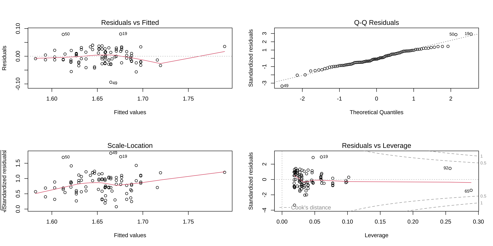
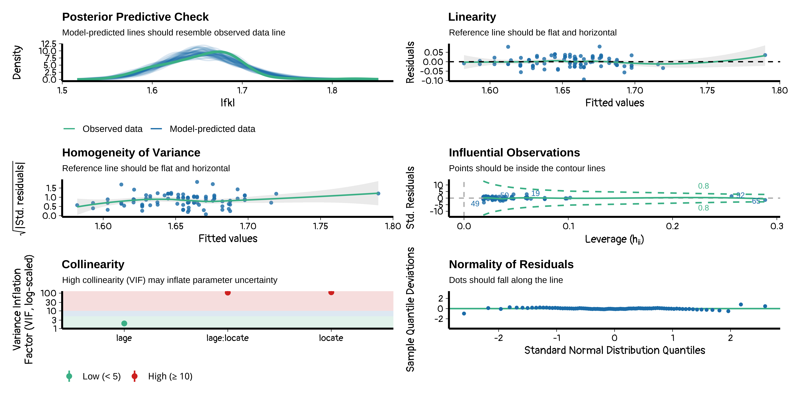
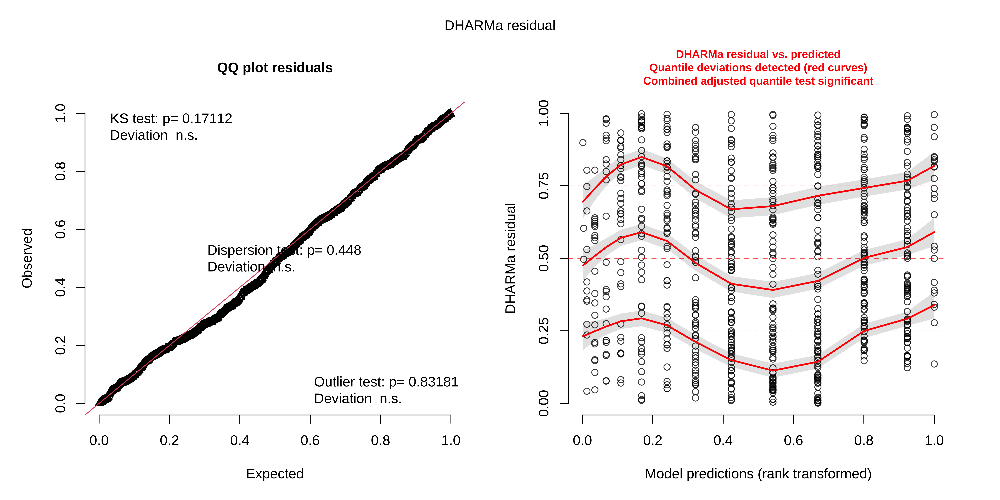
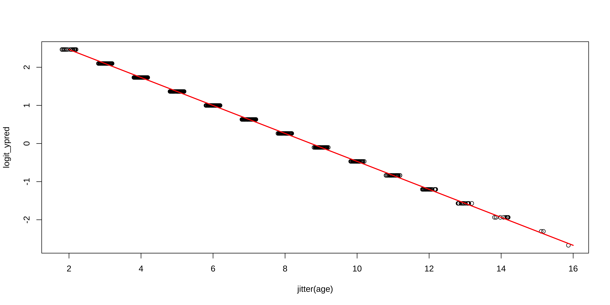
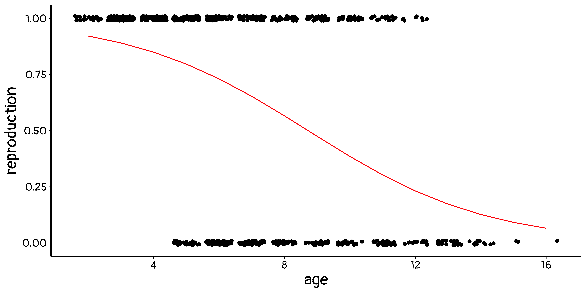
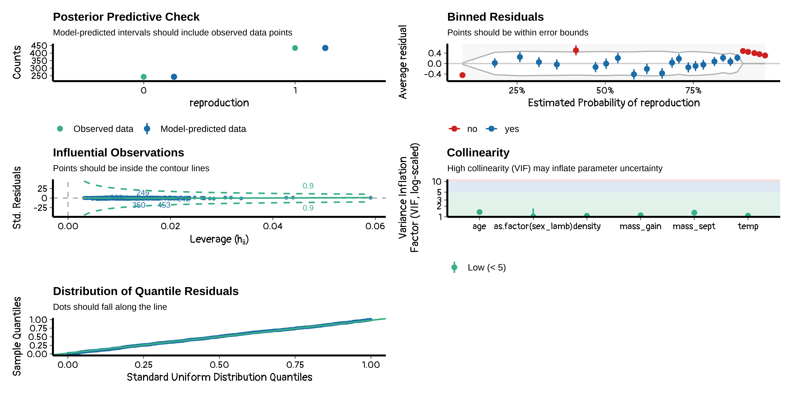
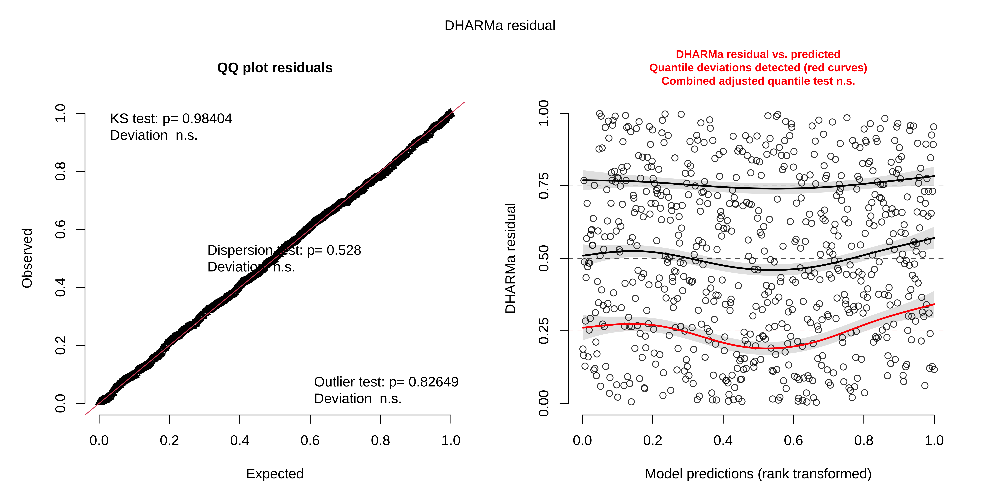

'data.frame': 92 obs. of 4 variables:
$ year : int 1978 1978 1978 1978 1978 1978 1978 1978 1978 1978 ...
$ fklngth: num 41.9 50.2 50.2 47.3 49.6 ...
$ locate : chr "NELSON " "LOFW " "LOFW " "NELSON " ...
$ age : int 11 24 23 20 23 20 23 19 17 14 ...Linear models and generalized linear models
in R
Julien Martin
BIO 8940
2026-01-19
Linear models
What is a linear regression
Simple linear regression
\[ Y_i = \beta_0 + \beta_1 x_i + \epsilon \\ \epsilon \sim N(0, \sigma^2_{\epsilon}) \]
or in distributional notation \(Y \sim N(\beta_0 + \beta_1 x, \sigma^2_{\epsilon})\)
General linear model
\[ Y_i = \beta_0 + \beta_1 x_{1i} + \beta_1 x_{2i} + ... + \epsilon \\ \epsilon \sim N(0, \sigma^2_{\epsilon}) \]
and \(Y \sim N(\beta_0 + \beta_1 x_{1i} + \beta_1 x_{2i} + ..., \sigma^2)\)
Linear model assumptions
Some are made on the residuals and others on the independent variables. None are made on the (unconditionned) dependent variable.
Residuals are assumed to:
- have a mean of zero
- be independent
- be normally distributed
- be homoscedastic
Independent variables are assumed to:
- have a linear relation with Y
- be measured without error
- to be independent from each other
Maximum likelihood
Technique used for estimating the parameters of a given distribution, using some observed data
For Example:
Population is known to follow a “normal distribution” but “mean” and “variance” are unknown, MLE can be used to estimate them using a limited sample of the population.
Likelihood vs probability
We maximize the likelihood and make inferences on the probability
Likelihood
\[ L(parameters | data) \]
How likely it is to get those parameters given the data.
Probability
\[ P(data | null\ parameters) \]
Probability to get the data given the null parameters. Or how probable it is to get those data according to the null model.
Maximum likelihood approach
\[ L(parameters | data) = \prod_{i=1}^{n} f(data_i | parameters) \]
where f is the probability density function of your model.
Working with product is more painful than with sum, we can take the log:
\[ ln(L(parameters | data)) = \sum_{i=1}^{n} ln(f(data_i | parameters)) \]
Need to solve:
\[ \frac{\delta ln(L(parameters | data)}{\delta parameters} = 0 \]
For multiple regression, the parameters \(\beta\)s are given by \(\beta = (X^T X)^{-1} X^T y\)
Doing linear models in R
Simply use lm() function. It works for everything anova, ancova, t-test.
We will use data of sturgeon measurements at different locations in Canada.
Fitting a model and checking assumptions
First we load the needed packages for:
- data manipulation:
tidyverse - fancy plots:
ggplot2 - type III anova:
car - fancy and nicer visual assumptions checks:
performance - formal assumptions tests:
lmtest
Data exploration
Creating log10 transform
Data exploration: with log
Fit the model
Call:
lm(formula = lfkl ~ lage + locate + lage:locate, data = dat)
Residuals:
Min 1Q Median 3Q Max
-0.09375 -0.01864 -0.00253 0.02090 0.08030
Coefficients:
Estimate Std. Error t value Pr(>|t|)
(Intercept) 1.24287 0.04370 28.443 < 2e-16 ***
lage 0.31431 0.03292 9.546 3.08e-15 ***
locateNELSON 0.19295 0.06331 3.048 0.00304 **
lage:locateNELSON -0.14276 0.04902 -2.912 0.00455 **
---
Signif. codes: 0 '***' 0.001 '**' 0.01 '*' 0.05 '.' 0.1 ' ' 1
Residual standard error: 0.02823 on 88 degrees of freedom
Multiple R-squared: 0.5664, Adjusted R-squared: 0.5516
F-statistic: 38.31 on 3 and 88 DF, p-value: 6.197e-16Anova for factors
Anova Table (Type III tests)
Response: lfkl
Sum Sq Df F value Pr(>F)
(Intercept) 0.64467 1 809.0107 < 2.2e-16 ***
lage 0.07262 1 91.1310 3.079e-15 ***
locate 0.00740 1 9.2901 0.003042 **
lage:locate 0.00676 1 8.4815 0.004546 **
Residuals 0.07012 88
---
Signif. codes: 0 '***' 0.001 '**' 0.01 '*' 0.05 '.' 0.1 ' ' 1Assumptions (classic)
Assumptions (Nicer)
Formal tests
Normality of residuals
Formal tests
Heteroscedasticity
Formal tests
Linearity
Generalized linear models
Generalized linear models
An extension to linear models
GLM expresses the transformed conditional expectation of the dependent variable Y as a linear combination of the regression variables X
Model has 3 components
a dependent variable Y with a response distribution to model it: Gaussian, Binomial, Bernouilli, Poisson, negative binomial, zero-inflated …, zero-truncated …, …
linear predictors (or independent variables) \[ \eta = \beta_0 + \beta_1 X_1 + ... + \beta_k X_k \]
a link function such that \[ E(Y |X) = \mu = g^{-1} (\eta) \]
Dependent variable
when continuous and follows conditional normal distribution, called Linear regression
Binary outcomes (success/failure), follows a Binomial distribution, called Logistic regression
Count data (number of events), follows a Poisson, called Poisson regression
Classic link functions
- Identity link (form used in linear regression models)
\[ g(\eta) = \mu \]
- Log link (used when \(\mu\) cannot be negative, e.g. Poisson data)
\[ g(\eta) = log(\mu) \]
Logit link (used when is bounded between 0 and 1, e.g. binary data)
\[ g(\eta) = log\left(\frac{p}{1-p}\right) \]
Linear regression
- Y: continuous, response distribution: Gaussian
\[ Y \sim \mathcal{N}(\mu, \sigma^2_e) \]
- linear predictor
\[ \eta = \beta_0 + \beta_1 X_1 + ... + \beta_k X_k\\ \]
- Link function: identity
\[ g(\eta) = \mu \text{ and } \mu = \eta\\ \]
Logistic regression
- Y: binary or proportion, Response distribution: Binomial or Bernoulli
\[ Y \sim Bernoulli(\pi) \]
- linear predictor
\[ \eta = \beta_0 + \beta_1 X_1 + ... + \beta_k X_k\\ \]
- Link function: logit \[ g(\eta) = ln\left(\frac{\pi}{1-\pi}\right) \text{ and } \pi = \frac{1}{1 + e^{-\eta}}\\ \]
Poisson regression
- Y: discrete variable (integers), Response distribution: Poisson or Negative binomial
\[ Y \sim \mathcal{P}(\lambda) \]
- linear predictor
\[ \eta = \beta_0 + \beta_1 X_1 + ... + \beta_k X_k\\ \]
- Link function: natural logarithm
\[ g(\eta) = ln(\lambda) \text{ and } \lambda = e^{\eta}\\ \]
Model assumptions
Easy answer none or really few
More advanced answer I am not sure, it is complicated
Just check residuals I as usual
Technically only 3 assumption:
Variance is a function of the mean specific to the distribution used
observations are independent
linear relation on the latent scale
GLMs do not care if the residual errors are Gaussian as long as the specified mean-variance relationship is satisfied by the data
- what about DHaRMA ? It’s complicated
Choosing a link function
A link function should map the stuctural component from \((-\infty,\infty)\) to the distribution interval (e.g. (0,1) for binomial)
So number of link function possible is extremley large.
Choice of link function heavily influenced by field tradiditon
For binomial models
- logit assume modelling probability of an observation to be one
- probit assume binary outcome from a hidden gaussian variable (i.e. threshold model)
- logit & probit are really similar, both are symmetric but probit tapers faster. logit coefficient easier to interpret directly
- cologlog not-symmetrical
Logistic regression
Data
Here is some data to play with from a study on bighorn sheep.
We will look at the relation between reproduction and age
Loading and tweaking the data
First plot
bubble <- data.frame(
age = rep(2:16, 2),
reproduction = rep(0:1, each = 15),
size = c(table(mouflon$age, mouflon$reproduction))
) %>%
mutate(size = ifelse(size == 0, NA, size))
ggplot(
bubble,
aes(x = age, y = reproduction, size = size)
) +
geom_point(alpha = 0.8) +
scale_size(range = c(.1, 20), name = "Nb individuals")Fitting the logistic regression
Call:
glm(formula = reproduction ~ age, family = binomial, data = mouflon)
Coefficients:
Estimate Std. Error z value Pr(>|z|)
(Intercept) 3.19921 0.25417 12.59 <2e-16 ***
age -0.36685 0.03287 -11.16 <2e-16 ***
---
Signif. codes: 0 '***' 0.001 '**' 0.01 '*' 0.05 '.' 0.1 ' ' 1
(Dispersion parameter for binomial family taken to be 1)
Null deviance: 928.86 on 715 degrees of freedom
Residual deviance: 767.51 on 714 degrees of freedom
(4 observations deleted due to missingness)
AIC: 771.51
Number of Fisher Scoring iterations: 4Checking assumptions
Plotting predictions (latent scale)
plotting the model prediction on the link (latent) scale
Plotting predictions (latent scale)

Plotting predictions (obs scale)
plotting on the observed scale
Plotting predictions (obs scale)

Plotting predictions (obs scale)
but it can be much simpler
dat_predict <- data.frame(
age = seq(min(mouflon$age), max(mouflon$age), length = 100)
) %>%
mutate(
reproduction = predict(m1, type = "response", newdata = .)
)
ggplot(mouflon, aes(x = age, y = reproduction)) +
geom_jitter(height = 0.01) +
geom_line(data = dat_predict, aes(x = age, y = reproduction), color = "red")
Your turn
we can do the same things with more complex models
check model
with DHaRMA
Poisson regression
Data
data on galapagos islands species richness
Fit 3 models:
- model of total number of species
- model of proportion of endemics to total
- model of species density
Call:
glm(formula = Species ~ Area + Elevation + Nearest, family = poisson,
data = gala)
Coefficients:
Estimate Std. Error z value Pr(>|z|)
(Intercept) 3.548e+00 3.933e-02 90.211 < 2e-16 ***
Area -5.529e-05 1.890e-05 -2.925 0.00344 **
Elevation 1.588e-03 5.040e-05 31.502 < 2e-16 ***
Nearest 5.921e-03 1.466e-03 4.039 5.38e-05 ***
---
Signif. codes: 0 '***' 0.001 '**' 0.01 '*' 0.05 '.' 0.1 ' ' 1
(Dispersion parameter for poisson family taken to be 1)
Null deviance: 3510.7 on 29 degrees of freedom
Residual deviance: 1797.8 on 26 degrees of freedom
AIC: 1966.7
Number of Fisher Scoring iterations: 5Happy coding

BIO 8940